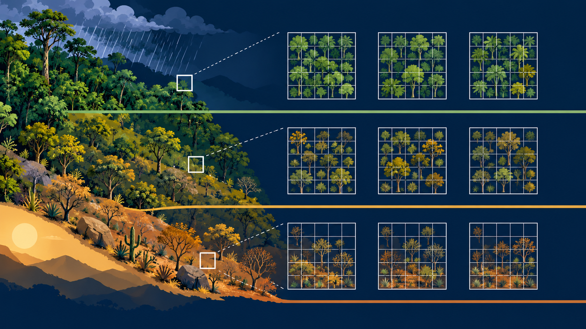
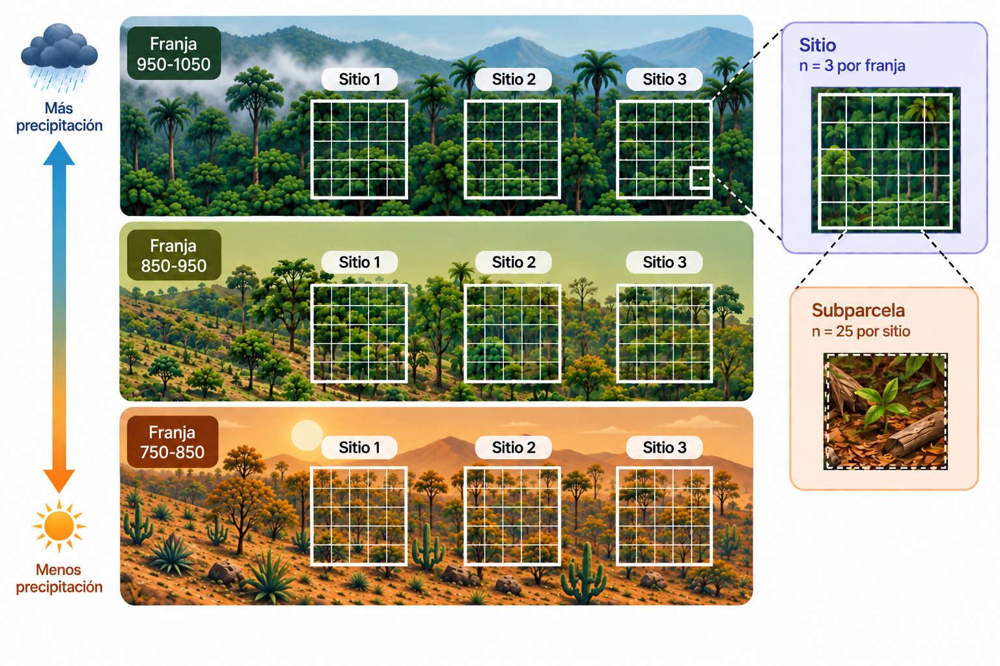

Fase 0
Diseño experimental realizado y aAuditoría de datos — censo estructural y de rasgos
1 Nota sobre esta página
Esta página documenta la auditoría de datos que sostiene el resto de las fases del sitio. Se reconstruye aquí sobre los archivos definitivos del proyecto (Datos_estructura_PNNT.xlsx y Matriz_rasgos_PNNT.xlsx, ambos ya cerrados) — dos hallazgos nuevos surgieron al recalcularla con estos archivos finales y se documentan explícitamente más abajo (sinonimia taxonómica y posibles duplicados de digitación), ya que no habían quedado registrados en ninguna fase posterior.
2 Propósito
Revisar tipos de variable, duplicados, valores faltantes, outliers univariados y coherencia de nombres de especie/código entre el censo estructural y la matriz de rasgos, y confirmar el balance del diseño Sitio(Franja) antes de avanzar a cualquier análisis. Sigue el mandato estándar de auditoría del proyecto: reportar, no corregir todavía.
3 Paquetes
4 Lectura de la base y preparación de los datos
Individuos en el censo: 4070 Especies en la matriz de rasgos: 71 5 Diseño experimental: elementos, principios y tipo

Nota: la dirección del gradiente (mayor precipitación a mayor elevación) es una hipótesis de trabajo del equipo, no un dato confirmado. Tampoco está aún confirmado con el equipo de trabajo si los rangos 750-850 / 850-950 / 950-1050 corresponden a precipitación, elevación, u otra unidad de medida — el censo solo los nombra así.
Antes de auditar los datos vale la pena dejar explícito qué tipo de diseño sostiene todo el proyecto, es la base para interpretar correctamente cada prueba estadística de las fases siguientes, y el punto de partida para explicárselo al equipo de trabajo.
5.0.1 Naturaleza del estudio
PNNT no es un experimento manipulativo, es un estudio observacional o mensurativo (en el sentido de Hurlbert 1984): nadie asignó la Franja a un Sitio; la Franja es un atributo geográfico preexistente del gradiente de precipitación. Esto no es una debilidad del diseño, es simplemente el tipo de estudio que corresponde a una pregunta de gradiente ambiental, similar a p. ej., comparar dos bahías con distinto tráfico de embarcaciones o dos sitios de manglar con y sin restauración.
5.0.2 Unidad experimental y unidad de observación
- Unidad experimental (unidad de muestreo primaria): el Sitio. Es la entidad a la que “le corresponde” un nivel de Franja de forma natural, y define el tamaño de muestra real para comparar Franjas (n = 3 por franja, n = 9 en total).
- Unidad de observación: la Subparcela (25 por sitio). Ahí se cuentan los individuos — puede haber, y hay, varias subparcelas por sitio.
5.0.3 Estructura del diseño
Franja (gradiente hídrico, 3 niveles: 750-850, 850-950, 950-1050) └── Sitio (n = 3 por franja) └── Subparcela (n = 25 por sitio; 225 en total)
5.0.4 Principios de diseño aplicados
| Principio | ¿Se aplicó? | Nota |
|---|---|---|
| Aleatorización | Parcial | No se aleatorizó (ni podía) qué Franja le toca a cada Sitio — es una condición natural del terreno. Queda pendiente confirmar con el equipo de campo si la ubicación de las 25 subparcelas dentro de cada sitio fue aleatoria, sistemática (grilla) o por conveniencia. |
| Replicación | Sí, en dos escalas | 3 Sitios por Franja (réplica real del efecto Franja) y 25 Subparcelas por Sitio (réplica real del efecto Sitio). |
| Bloqueo | No en el sentido clásico, pero análogo | El Sitio funciona como un bloque implícito que agrupa 25 subparcelas con condiciones locales compartidas; así se trató estadísticamente (Sitio como estrato al probar el efecto Franja). |
| Control | Ausente, correctamente | No hay grupo “sin tratamiento” porque no hay tratamiento — hay un gradiente natural. Las 3 Franjas son 3 estados igualmente “naturales” del gradiente, no una intervención frente a su ausencia. |
5.0.5 Tipo de diseño
No encaja de forma limpia en ninguno de los 4 tipos clásicos (CA, bloques al azar, factorial, parcelas divididas) — y es más honesto decirlo así que forzarlo en una casilla:
- No es CA: hay estructura jerárquica clara.
- No es bloques al azar clásico: Franja no es una variable de estorbo que se bloquea, es la variable de interés.
- No es factorial: solo hay un factor de interés (Franja), no dos factores cruzados.
- El más parecido es parcelas divididas, pero le falta la pieza que lo definiría como tal: un segundo factor manipulado dentro de la subparcela. Aquí la subparcela es pura sub-réplica de muestreo.
El nombre técnico correcto es diseño anidado/jerárquico de muestreo: Sitio anidado en Franja, Subparcela anidada en Sitio — Sitio(Franja).
5.0.6 Cómo se controla la pseudoreplicación
El error clásico (Hurlbert 1984) sería tratar las 225 subparcelas como si fueran 225 réplicas independientes de Franja, cuando la réplica real de Franja es solo 9 (los sitios). Este proyecto lo evita separando la pregunta en dos pruebas, cada una a la escala que le corresponde:
- Efecto Franja → probado con el Sitio como unidad (n = 9).
- Efecto Sitio(Franja) → probado con la Subparcela como unidad (n = 225), con las permutaciones restringidas dentro de cada Franja.
Esta separación es la salvaguarda contra pseudoreplicación de todo el proyecto, y se aplica de forma consistente desde Fase 4 en adelante.
6 Auditoría de los datos
6.1 Hallazgo 1 — filas posiblemente duplicadas en el censo
Filas involucradas: 75 ( 37.5 pares/grupos )| Sitio | n |
|---|---|
| BCC | 4 |
| BCS | 9 |
| CHG | 2 |
| CMZ | 2 |
| GQT | 11 |
| GRC | 2 |
| LEC | 6 |
| QRD | 1 |
Es una señal de alerta, no una corrección aplicada. Se encontraron 37-38 combinaciones exactas de Sitio + Subparcela + Especie + DAP + Altura repetidas dos (y en un caso tres) veces — por ejemplo, dos registros idénticos de Cochlospermum vitifolium en BCS-B160 con DAP=33.4 cm y altura=17 m. Que dos árboles distintos coincidan exactamente en DAP (con un decimal) y en altura en una subparcela de 20×20 m es estadísticamente inusual — es más consistente con doble digitación que con coincidencia biológica. Están distribuidas en 8 de los 9 Sitios (GQT es el más afectado, con 11 grupos; PLC no muestra ninguno). Se recomienda verificar contra las planillas de campo originales antes de decidir si se eliminan — de confirmarse como duplicados de digitación, afectarían el censo en <1 % de los individuos (37-38 de 4070), sin cambiar de forma apreciable ningún resultado de Fase 4, pero sí conviene dejarlo resuelto antes del manuscrito final.
6.2 Hallazgo 2 — coherencia de nombres entre censo y matriz de rasgos
Especies/morfoespecies en el censo: 72 Especies en la matriz de rasgos: 71
En censo, sin fila en la matriz de rasgos:[1] "Enneatypus ramiflorus" "Matayba sp."
En la matriz de rasgos, sin coincidencia directa en el censo:[1] "Ruprechtia ramiflora"Dos casos, de naturaleza distinta:
Matayba sp.(15 individuos en 4 Sitios, identificado solo a género) no tiene fila en la matriz de rasgos — falta real, candidata a imputación a nivel de género en una futura revisión de Fase 2.Enneatypus ramiflorus(censo) yRuprechtia ramiflora(matriz de rasgos) son la misma especie — sinonimia taxonómica confirmada (GBIF / Catálogo de plantas y líquenes de Colombia, Bernal et al. 2015): Enneatypus ramiflorus (C.A.Mey.) Roberty & Vautier es sinónimo de Ruprechtia ramiflora (Jacq.) C.A.Mey. No es un dato faltante, es un problema de nomenclatura — se recomienda armonizar ambas bases al nombre que POWO trate como aceptado y dejarlo trazable en la hojaErratum.
6.3 Hallazgo 3 — valores faltantes
| Variable | N_NA |
|---|---|
| Nombre.común | 674 |
| Familia | 1 |
Nombre.común faltante en 674 individuos es esperable (no todas las especies tienen nombre vernáculo registrado en campo) y no afecta ningún análisis. El único Familia faltante corresponde al individuo marcado como Indeterminada (GRC, DAP=10.8 cm) — consistente, ya excluido de las matrices especie × unidad desde Fase 4.
6.4 Hallazgo 4 — outliers univariados (DAP y altura)
| Variable | Limite_superior_IQR | Maximo_observado | N_sobre_limite | |
|---|---|---|---|---|
| 75%...1 | DAP (cm) | 38.7 | 184.6 | 252 |
| 75%...2 | Altura (m) | 19.5 | 32.0 | 128 |
Los conteos son altos (252 individuos sobre el límite de DAP, 128 sobre el de altura) pero esperables: la distribución diamétrica de un bosque natural maduro es marcadamente asimétrica hacia la derecha (muchos individuos pequeños, pocos grandes), y el criterio 1.5×IQR está diseñado para distribuciones simétricas — no se interpreta como error. Vale la pena una verificación puntual del máximo de DAP (184.6 cm) por ser inusualmente grande incluso para un bosque conservado, pero no hay evidencia aquí de que sea un error de dígito (p. ej. 184.6 en vez de 18.46).
6.5 Verificación de la selección histórica de 7 especies por IVI
El borrador del manuscrito indica que se seleccionaron siete especies presentes en las 9 parcelas para la toma de rasgos en campo. Esas siete especies son identificables directamente en la matriz de rasgos por su estado medido_campo (con 29 a 40 individuos medidos cada una):
[1] "Bursera simaruba" "Calycophyllum candidissimum"
[3] "Handroanthus billbergii" "Platymiscium pinnatum"
[5] "Pseudobombax septenatum" "Pterocarpus rohrii"
[7] "Ruprechtia ramiflora" | Especie | n_individuos_censo | n_sitios_presente |
|---|---|---|
| Platymiscium pinnatum | 279 | 9 |
| Bursera simaruba | 188 | 8 |
| Pseudobombax septenatum | 63 | 8 |
| Pterocarpus rohrii | 185 | 7 |
| Handroanthus billbergii | 319 | 6 |
| Calycophyllum candidissimum | 82 | 5 |
Hallazgo relevante: con el censo en su estado actual, solo Platymiscium pinnatum está presente en las 9 parcelas (además de Astronium graveolens, que no fue parte de la selección original). De las 7 especies históricas, dos (Bursera simaruba, Pseudobombax septenatum) están en 8 sitios, una en 7, una en 6, y Calycophyllum candidissimum en solo 5 — la selección original ya no es plenamente consistente con el censo consolidado. Esto no invalida el trabajo de campo (los datos se tomaron correctamente en su momento, posiblemente antes de que el censo estructural se consolidara del todo), pero sí confirma y refuerza la decisión ya tomada por el equipo de trabajar con todas las especies del censo en lugar de limitarse a esas 7.
6.6 Balance del diseño Sitio(Franja)
| Sitio | Franja |
|---|---|
| BCC | 750-850 |
| CHG | 750-850 |
| PLC | 750-850 |
| BCS | 850-950 |
| CMZ | 850-950 |
| GRC | 850-950 |
| GQT | 950-1050 |
| LEC | 950-1050 |
| QRD | 950-1050 |
| Sitio | n |
|---|---|
| BCC | 25 |
| BCS | 25 |
| CHG | 25 |
| CMZ | 25 |
| GQT | 25 |
| GRC | 25 |
| LEC | 25 |
| PLC | 25 |
| QRD | 25 |
Diseño confirmado: 9 Sitios (3 por cada una de las 3 Franjas de precipitación), 25 Subparcelas por Sitio, 225 unidades en total — perfectamente balanceado. Esto hace viable el anidamiento Sitio(Franja) en los análisis multivariados de fases posteriores, con la Subparcela como unidad de réplica real (ver Fase 4).
6.7 Limitación de esta reconstrucción
El protocolo original de Fase 0 incluye verificar si las transformaciones (log, sqrt) aplicadas a los rasgos crudos a nivel de individuo son adecuadas (normalidad/homocedasticidad). Esa verificación requiere el archivo de rasgos a nivel de individuo (Datos_rasgos_PNNT.xlsx, 236 individuos), que no está disponible junto con los archivos ya cerrados de Fase 2 en esta reconstrucción. Queda pendiente confirmar con el equipo si ese chequeo ya se hizo sobre el archivo crudo antes del cierre de Fase 2, o si conviene repetirlo.
7 Síntesis de Fase 0
Lo que queda confirmado y no bloquea el avance:
- Diseño Sitio(Franja) perfectamente balanceado (9/3/225).
- Valores faltantes esperables y sin impacto en el análisis.
- Outliers de DAP/altura consistentes con la estructura natural de un bosque maduro, no con errores de dígito.
- La decisión de trabajar con todas las especies del censo (en vez de las 7 originales) queda confirmada por los datos, no solo por acuerdo del equipo.
Pendientes reales, para resolver con el equipo:
- Verificar en planillas de campo los 37-38 grupos de posible doble digitación (Hallazgo 1).
- Armonizar
Enneatypus ramiflorus/Ruprechtia ramifloraal nombre aceptado en POWO, en censo y matriz de rasgos. - Confirmar si
Matayba sp.puede imputarse a nivel de género en una futura revisión de Fase 2. - Confirmar si la verificación de transformaciones sobre datos crudos de rasgos individuales ya se hizo en una sesión anterior no documentada aquí.
Qué heredan las fases siguientes: el diseño Sitio(Franja) confirmado aquí es la base de Fase 4 (TD) y Fase 5 (FD); la sinonimia Enneatypus/Ruprechtia es relevante para la matriz de rasgos que usa Fase 3 en adelante.